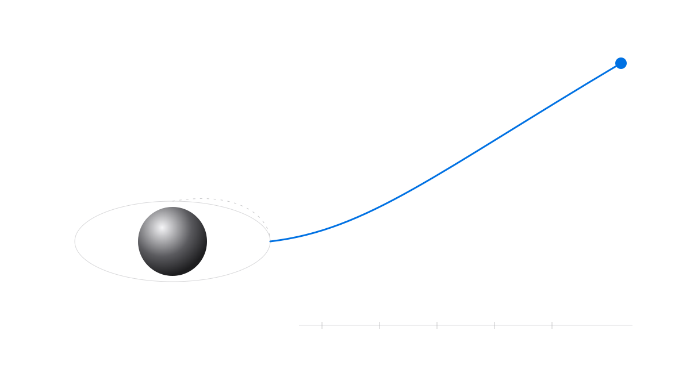
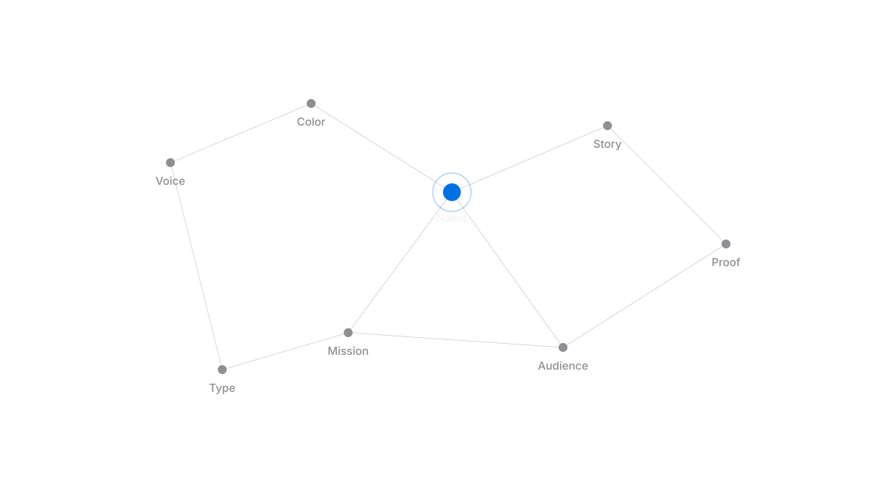
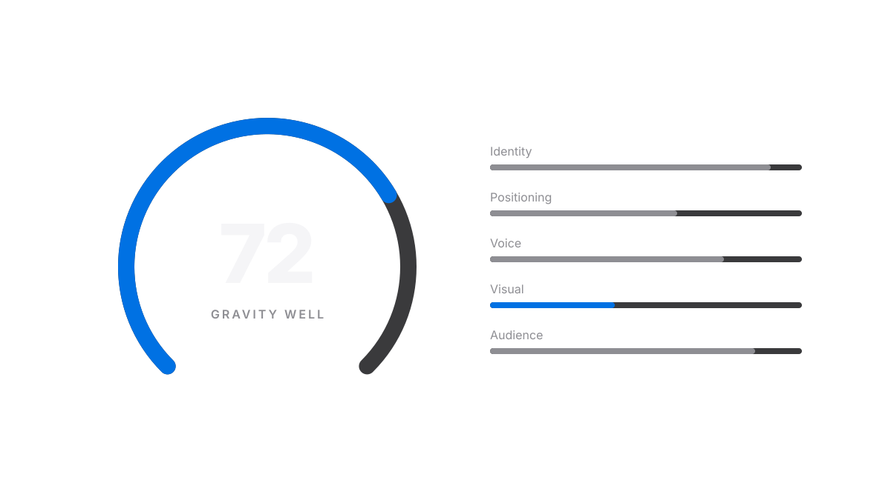
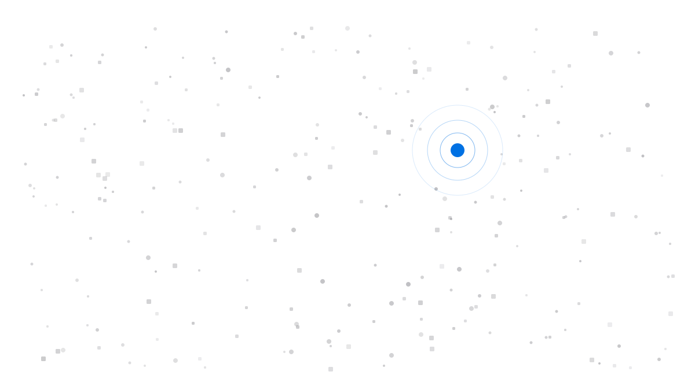
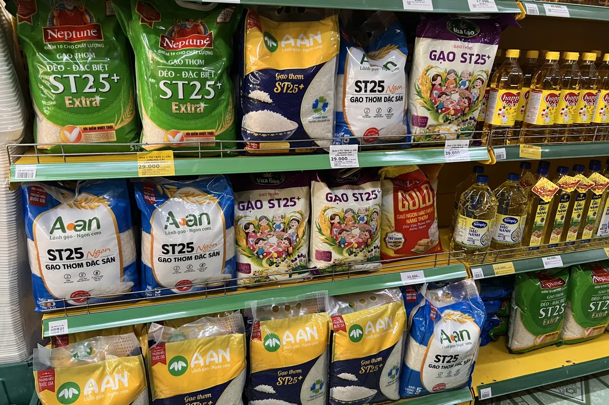
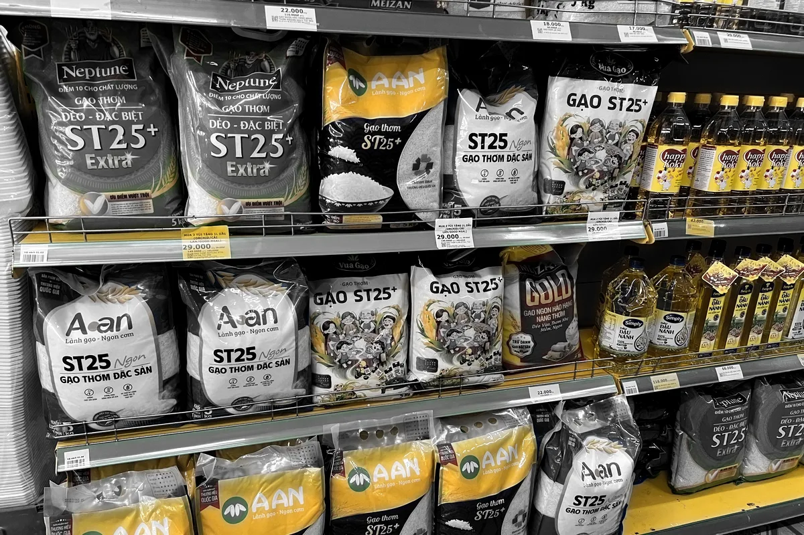
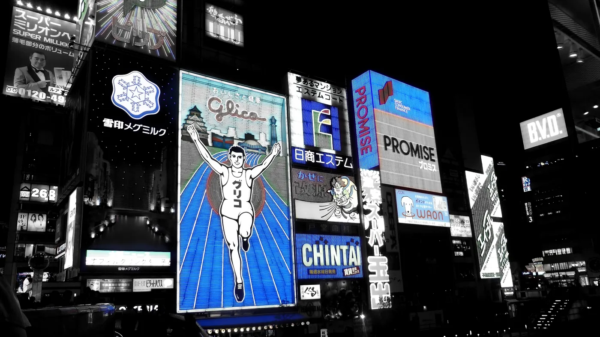
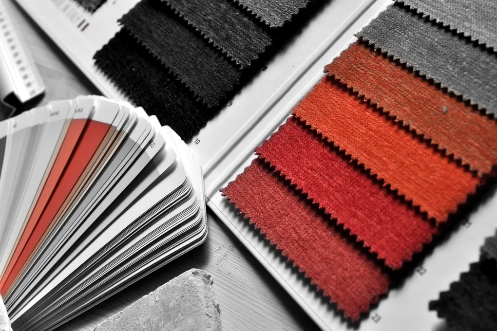
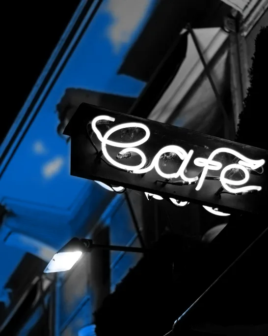

BrandMD Brand File
Strategy, voice, the visual system, a new imagery direction, two ways to make the app and the Journal feel like one brand, and an audit of where brandmd.space stands today.
Direction B is built. Look before it ships.
Both halves are on preview links only. Production is unchanged until you say go.
The six Gravity tiers
| Score | Tier | What the score screen says |
|---|---|---|
| 0 to 19 | Grounded | Your brand hasn't left the launchpad. |
| 20 to 39 | Lift-off | You're off the ground. Now hold a course. |
| 40 to 59 | In orbit | People can see you. Not all of them remember you. |
| 60 to 74 | Gravity well | You're starting to pull people in. |
| 75 to 89 | Escape velocity | Your brand moves on its own momentum. |
| 90 to 100 | Out of this world | A brand people orbit. |
Live in the Analyzer preview, with "N points from the next tier" under each score. A tier describes how complete a brand is, never revenue.
The full phrase bank: headlines, microcopy, CTAs, social lines, words to avoid
Space graphics

Gravity well. Hero and section backgrounds.

Orbit system. The library and Research pages.

Escape velocity. Upgrades, launches, wins.

Signal constellation. How a brand's parts connect.

Telemetry. Score cards, share images, emails.

Tier ladder. Explains a score at a glance.

Launchpad. Founder Mode and first boards.

Signal through noise. The thesis, without words.
The origin story, draft 1
Your arc: a direct response marketer who thought branding was a tax joins a company with a beautiful brand and no ad engine, builds the engine, and finds the brand was doing the work his dashboards couldn't see. Then he opens a lab, scores great brands, and the lab becomes BrandMD. Every outside fact is sourced (Binet and Field's 996 campaigns, Dollar Shave Club, Airbnb's S-1, Houlihan Lokey's deal data, a meta-analysis of 83 studies). "Bad brands rarely sell for multiples" is stated as your opinion, because no study tests it directly. The company, your real results and your name are marked [NEED]: I didn't invent them.
Read the origin story
Branding has been sold as taste. It can be measured.
Most founders guess at their brand. BrandMD scores it, builds the full system, and checks everything you publish against it, so people remember you and AI describes you right.
Founders and small teams who cannot afford an agency and will not settle for a logo and two colors.
Guesswork: the rebrand chosen by whoever spoke last, the moodboard nobody can defend, the stat nobody can source.
Your brand, measured and made usable, in minutes.
Give your brand gravity.
Tech challenger with evidence cues · Sage with a Magician streak · Openness + Achievement, gain-seeking.
The first score: a URL in, a number and a roadmap back in under a minute. Every surface should lead there.
The strategy is sound. It was never written down, so the surfaces drifted.
42%. Most of the gap is validation a new product can't have yet (no customer evidence, no entry-point map). Consistency scores lowest of what we control.
Clear but generic. Strong: the free score as a lead magnet, a named three-step plan, badge value. Missing: belonging, real stories, a followed voice chart.
The 5-second test passes. Discipline, contrast, one-accent use and craft finish fall below 4 and need fixing.
| Homepage check | Score | What we saw on the live page |
|---|---|---|
| One accent | 2 | Signal Blue colors headline words, links, buttons and orbit dots at the same time. |
| System discipline | 2 | Every section is centered; radii and section padding vary; styles are inline per section. |
| Contrast | 2 | Blue text links on black 4.5:1, footer grey 4.1:1, Titanium labels on the Journal's Paper 3.0:1. |
| Craft finish | 2 | 22 em dashes in homepage copy; orbiting marks slide behind the subhead and the URL field; a near-empty screen under the hero. |
| Conversion mechanics | 3 | One strong action, three wordings for it ("Chart your brand", "Get My Score", "Get Your Score: Free") and seven nav items. |
| Squint | 3 | The planet and orbit marks compete with the headline and the field. |
| 5-second test, grayscale, fit, scannability | 4 | "What's the Gravity of your brand?" plus a URL field is clear. Tech-clean Sage fits the buyer. |
Signal photography: the world in black and white, one signal in color.
It is BrandMD's thesis made visible. Most of what people see is noise, and a strong brand is the one signal that gets through. On BrandMD's own surfaces the signal is Signal Blue. In the Journal and the library it is the subject brand's own color, because that color is the lesson.




All sample photos are CC0 (Wikimedia Commons, StockSnap, Rawpixel) and were found and treated by the new brand-imagery skill. Credits are recorded in brand/imagery/src/credits.json.
Two directions. Both share one frame; they differ in how much light comes in.
Shared in both: the same nav (orbit mark, BrandMD, Score, Build, Check, Library, Research, Journal), one button that always says "Get your score", the same footer, the same tokens and radius family, Inter everywhere, and Signal photography.
Paper app: bring the white into BrandMD
The hero stays Night, so the gravity moment survives. Everything below it turns to Paper with white cards, left-aligned sections and photo bands. The Journal keeps its paper front page.
What's the Gravity of your brand?
In a street full of signs, one gets read.
Your brand is a signal. The score shows how strong it is, and what to fix first.
Tropicana swapped its orange for a glass of juice. Unit sales fell 20%.
The quiet shoppers who walked past were the big part.
- Reading and browsing pages (library, research, guidelines) get easier on the eyes.
- The Journal and the app look like one product immediately.
- Photos carry the color, which suits the black and white direction.
- The biggest rebuild: every homepage section and the library restyled.
- Loses some of the night-sky atmosphere that makes BrandMD memorable today.
Night frame: bring the black into the Journal
The app keeps Night as its world, but loses the centered everything and gets photo bands. The Journal puts on the same Ink nav and an Ink masthead with the lead story over a Signal photograph, then opens into a Paper reading surface.
What's the Gravity of your brand?
In a street full of signs, one gets read.
Your brand is a signal. The score shows how strong it is, and what to fix first.
Tropicana swapped its orange for a glass of juice. Unit sales fell 20%.
The quiet shoppers who walked past were the big part.

- Keeps what is already distinctive about BrandMD: the night sky and the gravity well.
- Moving between app and Journal now feels like turning a page, not changing sites.
- Articles still read on Paper, which suits long reading.
- Smallest change: mostly the Journal's frame and the homepage's alignment.
- The library and research pages stay dark, so long brand pages remain heavier to read.
- Signal Blue on Night needs the lighter link blue for text (built into the tokens).
The night sky is the closest thing BrandMD has to a distinctive asset, and Direction A would spend it. Direction B fixes the "two websites" feeling with one frame and one photo language, keeps reading comfortable, and is about a third of the work. If the library still feels heavy after B ships, give brand pages a Paper body as a second step.
Six devices for the blog, the app and social.
Orbit rings
Hero backgrounds, dividers and social cards. One blue dot at most.
Gravity dial
The score as a number on a 270° arc. Analyzer, certificates, share cards.
Signal dot and chart
Every series grey except the one that matters. One chart, one point.
Evidence meter
Four steps, filled to the grade. Every Journal article.
Palette strip
A brand's colors as one bar, sized by use, hex in tabular type. Library cards and Battles.
Scorecard
Two columns, Ink header. Brand Battles and Compare.
One palette, with a link blue for each surface.
#000000 · app hero#0B0B0C · dark surfaces#F5F5F7 · reading#8E8E93 · labels on dark#6E6E73 · labels on light, 4.7:1#0071E3 · the one accent#0066CC · 5.1:1 on Paper#2997FF · 7.0:1 on NightRadius family 8 / 14 / pill. Spacing 4 to 128 on a fixed scale. Inter only, Display cuts for headlines, tabular numerals for every score.
The photo-rich brand pages were built in July and never merged.
On July 2 a version of the brand pages with a full-bleed hero photo, a "Brand in Action" gallery, an archetype photo and a real photo moodboard was built on a side branch (worktree-sprightly-growing-flame, commit 866be1d). It never reached the live site, so the photos only ever showed on that branch's own deploy.
Two problems sit underneath. Logos: 84 of 85 brands have a sharp logo in our own storage, but the pages ask Clearbit first, which no longer exists, so they show favicons and letter tiles. Photos: only 16 brands ever had photo links, 13 of those are broken, and the rest point at the brands' own servers.
- Fix logos on all 84 pages. Read our cached
logo_urlfirst and drop Clearbit. About an hour. - Port the gallery and photo sections from the July commit by hand (about 150 lines; each section hides itself when a brand has no photos).
- Cache brand photos in our storage instead of hotlinking, with a script like the existing logo cache.
- Fill the other 69 brands with Signal photography of the brand in the wild (signage, shelves, packaging), keeping the brand's own color as the signal, sourced and logged by the brand-imagery skill.
The Journal's sitemap now updates and pings search engines on every post.
Every nightly build rewrites brandmd.space/blog/sitemap.xml with a lastmod date, and robots.txt lists it beside the app's own sitemap. Two engine fixes went live: page URLs, canonicals and sitemap entries now end in a slash (before, each one bounced through a redirect), and IndexNow now works for sites served under a folder. The first IndexNow submission was accepted (7 URLs), so Bing and other IndexNow engines hear about each new article the night it publishes.
Four calls before anything ships.
Everything above, in detail.
Read BRAND.md (about 4,000 words)
Photos: CC0 sources via Openverse (Wikimedia Commons contributors Tokumeigakarinoaoshima and VinhNguyen.1257, StockSnap photographer Tim Sullivan, Rawpixel). Treated with brand-imagery. Draft for internal review.